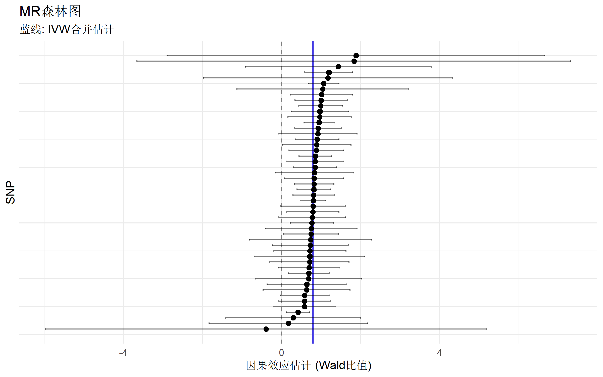
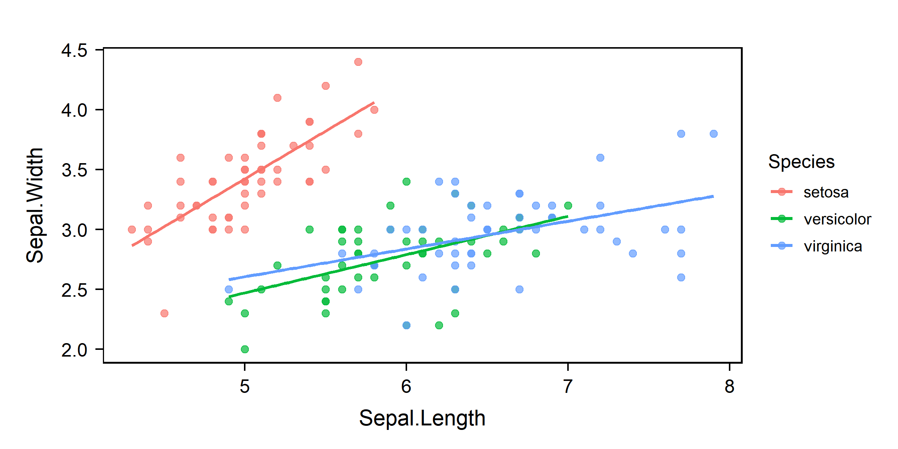

bruceR - 统计分析工具
R包
统计分析
数据处理
R包介绍
bruceR 全称 “BRoadly Useful Convenient and Efficient R functions”，由包寒吴霜博士开发，是一个集成了众多实用功能的 R 包，专为科研数据分析设计。
核心功能
bruceR 涵盖了数据分析的完整流程：
| 模块 | 功能 | 主要函数 |
|---|---|---|
| 基础编程 | 路径设置、数据导入导出、表格打印 | set.wd(), import(), export(), print_table() |
| 数据计算 | 量表计算、反向计分、重编码 | MEAN(), SUM(), RECODE(), RESCALE() |
| 信效度分析 | 信度分析、因子分析 | Alpha(), EFA(), PCA(), CFA() |
| 描述统计 | 描述统计、频率分析、相关分析 | Describe(), Freq(), Corr() |
| 方差分析 | t检验、ANOVA、简单效应、事后比较 | TTEST(), MANOVA(), EMMEANS() |
| 回归模型 | 模型汇总、多层模型 | model_summary(), HLM_summary() |
| 中介调节 | PROCESS 宏 | PROCESS(), med_summary() |
依赖包自动加载
加载 bruceR 时会自动加载常用包：
- 数据处理：
data.table,dplyr,tidyr,stringr - 可视化：
ggplot2 - 统计分析：
psych,emmeans,lmerTest,effectsize,performance
R包安装
# 方法1：从 CRAN 安装（推荐）
install.packages("bruceR", dep = TRUE)
# 方法2：从 GitHub 安装最新版
install.packages("devtools")
devtools::install_github("psychbruce/bruceR", dep = TRUE, force = TRUE)library(bruceR)基础编程功能
set.wd()：智能设置工作目录
自动将工作目录设置为当前脚本所在路径：
set.wd()import() / export()：万能数据导入导出
支持几乎所有常见数据格式，自动识别文件类型：
# 支持的格式：
# - 文本：.txt, .csv, .tsv
# - Excel：.xls, .xlsx
# - SPSS：.sav
# - Stata：.dta
# - R对象：.rda, .rds, .RData
# 导入数据
data <- import("data.xlsx")
data <- import("data.sav")
data <- import("data.dta")
# 导出数据
export(data, file = "output.xlsx")
export(data, file = "output.csv")cc()：快速创建字符向量
比 c() 更简洁，无需引号：
# 传统写法
c("age", "gender", "education")## [1] "age" "gender" "education"# bruceR 写法
cc("age, gender, education")## [1] "age" "gender" "education"print_table()：生成三线表
summary_data <- data.frame(
Variable = c("Age", "Income", "Score"),
Mean = c(35.2, 5000, 78.5),
SD = c(8.3, 1200, 12.1),
N = c(100, 100, 100)
)
print_table(summary_data)## ─────────────────────────────────────
## Variable Mean SD N
## ─────────────────────────────────────
## 1 Age 35.200 8.300 100.000
## 2 Income 5000.000 1200.000 100.000
## 3 Score 78.500 12.100 100.000
## ─────────────────────────────────────数据计算功能
MEAN() / SUM()：横向计算（支持反向计分）
心理学量表经常需要计算多个题目的均值或总分，并处理反向计分：
# 创建模拟问卷数据（5点量表，共6题）
set.seed(42)
questionnaire <- data.frame(
id = 1:5,
q1 = sample(1:5, 5, replace = TRUE),
q2 = sample(1:5, 5, replace = TRUE),
q3 = sample(1:5, 5, replace = TRUE),
q4 = sample(1:5, 5, replace = TRUE),
q5 = sample(1:5, 5, replace = TRUE),
q6 = sample(1:5, 5, replace = TRUE)
)
questionnaire## id q1 q2 q3 q4 q5 q6
## 1 1 1 4 1 3 5 4
## 2 2 5 2 5 1 5 3
## 3 3 1 2 4 1 5 2
## 4 4 1 1 2 3 4 1
## 5 5 2 4 2 4 2 2# 计算均值（q3、q6 反向计分，量表范围1-5）
questionnaire$score_mean <- MEAN(
questionnaire,
varrange = "q1:q6",
rev = c("q3", "q6"),
likert = 1:5
)
# 计算总分
questionnaire$score_sum <- SUM(
questionnaire,
varrange = "q1:q6",
rev = c("q3", "q6"),
likert = 1:5
)
questionnaire[, c("id", "score_mean", "score_sum")]## id score_mean score_sum
## 1 1 3.333333 20
## 2 2 2.833333 17
## 3 3 2.500000 15
## 4 4 3.000000 18
## 5 5 3.333333 20RECODE()：变量重编码
d <- data.frame(age = c(18, 25, 35, 45, 55, 65, 75))
d$age_group <- RECODE(d$age,
"lo:29 = '青年';
30:59 = '中年';
60:hi = '老年'"
)
d## age age_group
## 1 18 青年
## 2 25 青年
## 3 35 中年
## 4 45 中年
## 5 55 中年
## 6 65 老年
## 7 75 老年RESCALE()：变量标准化
scores <- c(2, 3, 4, 5, 6, 7, 8)
RESCALE(scores, to = 0:100)## [1] 0.00000 16.66667 33.33333 50.00000 66.66667 83.33333 100.00000信度与因子分析
Alpha()：信度分析
data("bfi", package = "psych")
# Alpha 需要指定数据和变量名
Alpha(bfi, var = "A", items = 1:5)##
## Reliability Analysis
##
## Summary:
## Total Items: 5
## Scale Range: 1 ~ 6
## Total Cases: 2800
## Valid Cases: 2709 (96.8%)
##
## Scale Statistics:
## Mean = 4.208
## S.D. = 0.735
## Cronbach’s α = 0.431
## McDonald’s ω = 0.592
##
## Warning: Scale reliability is low. You may check item codings.
## Item A1 correlates negatively with the scale and may be reversed.
## You can specify this argument: rev=c("A1")
##
## Item Statistics (Cronbach’s α If Item Deleted):
## ─────────────────────────────────────────────
## Mean S.D. Item-Rest Cor. Cronbach’s α
## ─────────────────────────────────────────────
## A1 2.412 (1.405) -0.311 0.718
## A2 4.797 (1.176) 0.372 0.278
## A3 4.599 (1.305) 0.478 0.174
## A4 4.682 (1.486) 0.365 0.252
## A5 4.551 (1.262) 0.448 0.207
## ─────────────────────────────────────────────
## Item-Rest Cor. = Corrected Item-Total CorrelationEFA()：探索性因子分析
data("bfi", package = "psych")
# 探索性因子分析：使用 var + items 格式
# 分析外向性(E)量表的5个题目
EFA(bfi, var = "E", items = 1:5, nfactors = 2, plot.scree = FALSE)##
## Principal Component Analysis
##
## Summary:
## Total Items: 5
## Scale Range: 1 ~ 6
## Total Cases: 2800
## Valid Cases: 2713 (96.9%)
##
## Extraction Method:
## - Principal Component Analysis
## Rotation Method:
## - Varimax (with Kaiser Normalization)
##
## KMO and Bartlett's Test:
## - Kaiser-Meyer-Olkin (KMO) Measure of Sampling Adequacy: MSA = 0.799
## - Bartlett's Test of Sphericity: Approx. χ²(10) = 3011.40, p < 1e-99 ***
##
## Total Variance Explained:
## ──────────────────────────────────────────────────────────────────────────────────
## Eigenvalue Variance % Cumulative % SS Loading Variance % Cumulative %
## ──────────────────────────────────────────────────────────────────────────────────
## Component 1 2.565 51.298 51.298 1.884 37.680 37.680
## Component 2 0.768 15.368 66.666 1.449 28.986 66.666
## Component 3 0.643 12.851 79.517
## Component 4 0.561 11.211 90.728
## Component 5 0.464 9.272 100.000
## ──────────────────────────────────────────────────────────────────────────────────
##
## Component Loadings (Rotated) (Sorted by Size):
## ─────────────────────────────
## RC1 RC2 Communality
## ─────────────────────────────
## E1 0.812 -0.098 0.668
## E2 0.752 -0.304 0.658
## E4 -0.736 0.290 0.625
## E5 -0.145 0.860 0.761
## E3 -0.312 0.723 0.620
## ─────────────────────────────
## Communality = Sum of Squared (SS) Factor Loadings
## (Uniqueness = 1 - Communality)描述统计与相关分析
Describe()：描述统计
Describe(iris[, 1:4])## Descriptive Statistics:
## ────────────────────────────────────────────────────────────────
## N Mean SD | Median Min Max Skewness Kurtosis
## ────────────────────────────────────────────────────────────────
## Sepal.Length 150 5.84 0.83 | 5.80 4.30 7.90 0.31 -0.61
## Sepal.Width 150 3.06 0.44 | 3.00 2.00 4.40 0.31 0.14
## Petal.Length 150 3.76 1.77 | 4.35 1.00 6.90 -0.27 -1.42
## Petal.Width 150 1.20 0.76 | 1.30 0.10 2.50 -0.10 -1.36
## ────────────────────────────────────────────────────────────────Freq()：频率分析
Freq(iris$Species)## Frequency Statistics:
## ───────────────────
## N %
## ───────────────────
## setosa 50 33.3
## versicolor 50 33.3
## virginica 50 33.3
## ───────────────────
## Total N = 150Corr()：相关分析
Corr(iris[, 1:4])## Pearson's r and 95% confidence intervals:
## ─────────────────────────────────────────────────────────────
## r [95% CI] p N
## ─────────────────────────────────────────────────────────────
## Sepal.Length-Sepal.Width -0.12 [-0.27, 0.04] .152 150
## Sepal.Length-Petal.Length 0.87 [ 0.83, 0.91] <.001 *** 150
## Sepal.Length-Petal.Width 0.82 [ 0.76, 0.86] <.001 *** 150
## Sepal.Width-Petal.Length -0.43 [-0.55, -0.29] <.001 *** 150
## Sepal.Width-Petal.Width -0.37 [-0.50, -0.22] <.001 *** 150
## Petal.Length-Petal.Width 0.96 [ 0.95, 0.97] <.001 *** 150
## ─────────────────────────────────────────────────────────────

plot of chunk unnamed-chunk-14
统计检验
TTEST()：t检验
# 独立样本 t 检验（需要两水平因子）
iris_subset <- iris[iris$Species %in% c("versicolor", "virginica"), ]
iris_subset$Species <- droplevels(iris_subset$Species)
TTEST(iris_subset, y = "Sepal.Length", x = "Species")##
## Independent-Samples t-test
##
## Hypothesis: two-sided (μ2 - μ1 ≠ 0)
##
## Descriptives:
## ───────────────────────────────────────────────
## Variable Factor Level N Mean (S.D.)
## ───────────────────────────────────────────────
## Sepal.Length Species versicolor 50 5.94 (0.52)
## Sepal.Length Species virginica 50 6.59 (0.64)
## ───────────────────────────────────────────────
##
## Levene’s test for homogeneity of variance:
## ────────────────────────────────────────────────────────────────────────────
## Levene’s F df1 df2 p
## ────────────────────────────────────────────────────────────────────────────
## Sepal.Length: Species (virginica - versicolor) 1.42 1 98 .236
## ────────────────────────────────────────────────────────────────────────────
## Note: H0 = equal variance (homoscedasticity).
## If significant (violation of the assumption),
## then you should better set `var.equal=FALSE`.
##
## Results of t-test:
## ─────────────────────────────────────────────────────────────────────────────────────────────────────────────────
## t df p Difference [95% CI] Cohen’s d [95% CI] BF10
## ─────────────────────────────────────────────────────────────────────────────────────────────────────────────────
## Sepal.Length: Species (virginica - versicolor) 5.63 98 <.001 *** 0.65 [0.42, 0.88] 1.13 [0.73, 1.52] 7.04e+04
## ─────────────────────────────────────────────────────────────────────────────────────────────────────────────────MANOVA()：多因素方差分析
MANOVA(data = npk, dv = "yield", between = c("N", "P", "K"))##
## ====== ANOVA (Between-Subjects Design) ======
##
## Descriptives:
## ─────────────────────────────
## "N" "P" "K" Mean S.D. n
## ─────────────────────────────
## N0 P0 K0 51.433 (4.600) 3
## N0 P0 K1 52.000 (5.635) 3
## N0 P1 K0 54.333 (9.411) 3
## N0 P1 K1 50.500 (2.364) 3
## N1 P0 K0 63.767 (5.086) 3
## N1 P0 K1 54.667 (4.216) 3
## N1 P1 K0 57.933 (5.478) 3
## N1 P1 K1 54.367 (5.006) 3
## ─────────────────────────────
## Total sample size: N = 24
##
## ANOVA Table:
## Dependent variable(s): yield
## Between-subjects factor(s): N, P, K
## Within-subjects factor(s): –
## Covariate(s): –
## ──────────────────────────────────────────────────────────────────────────
## MS MSE df1 df2 F p η²p [90% CI of η²p] η²G
## ──────────────────────────────────────────────────────────────────────────
## N 189.282 30.724 1 16 6.161 .025 * .278 [.024, .529] .278
## P 8.402 30.724 1 16 0.273 .608 .017 [.000, .220] .017
## K 95.202 30.724 1 16 3.099 .097 . .162 [.000, .427] .162
## N * P 21.282 30.724 1 16 0.693 .418 .041 [.000, .277] .041
## N * K 33.135 30.724 1 16 1.078 .314 .063 [.000, .312] .063
## P * K 0.482 30.724 1 16 0.016 .902 .001 [.000, .078] .001
## N * P * K 37.002 30.724 1 16 1.204 .289 .070 [.000, .322] .070
## ──────────────────────────────────────────────────────────────────────────
## MSE = mean square error (the residual variance of the linear model)
## η²p = partial eta-squared = SS / (SS + SSE) = F * df1 / (F * df1 + df2)
## ω²p = partial omega-squared = (F - 1) * df1 / (F * df1 + df2 + 1)
## η²G = generalized eta-squared (see Olejnik & Algina, 2003)
## Cohen’s f² = η²p / (1 - η²p)
##
## Levene’s Test for Homogeneity of Variance:
## ───────────────────────────────────────
## Levene’s F df1 df2 p
## ───────────────────────────────────────
## DV: yield 0.986 7 16 .475
## ───────────────────────────────────────EMMEANS()：边际均值与事后比较
result <- MANOVA(npk, dv = "yield", between = c("N", "P"))##
## ====== ANOVA (Between-Subjects Design) ======
##
## Descriptives:
## ─────────────────────────
## "N" "P" Mean S.D. n
## ─────────────────────────
## N0 P0 51.717 (4.611) 6
## N0 P1 52.417 (6.486) 6
## N1 P0 59.217 (6.504) 6
## N1 P1 56.150 (5.084) 6
## ─────────────────────────
## Total sample size: N = 24
##
## ANOVA Table:
## Dependent variable(s): yield
## Between-subjects factor(s): N, P
## Within-subjects factor(s): –
## Covariate(s): –
## ──────────────────────────────────────────────────────────────────────
## MS MSE df1 df2 F p η²p [90% CI of η²p] η²G
## ──────────────────────────────────────────────────────────────────────
## N 189.282 32.870 1 20 5.758 .026 * .224 [.017, .460] .224
## P 8.402 32.870 1 20 0.256 .619 .013 [.000, .181] .013
## N * P 21.282 32.870 1 20 0.647 .430 .031 [.000, .230] .031
## ──────────────────────────────────────────────────────────────────────
## MSE = mean square error (the residual variance of the linear model)
## η²p = partial eta-squared = SS / (SS + SSE) = F * df1 / (F * df1 + df2)
## ω²p = partial omega-squared = (F - 1) * df1 / (F * df1 + df2 + 1)
## η²G = generalized eta-squared (see Olejnik & Algina, 2003)
## Cohen’s f² = η²p / (1 - η²p)
##
## Levene’s Test for Homogeneity of Variance:
## ───────────────────────────────────────
## Levene’s F df1 df2 p
## ───────────────────────────────────────
## DV: yield 0.160 3 20 .922
## ───────────────────────────────────────EMMEANS(result, effect = "N")## ------ EMMEANS (effect = "N") ------
##
## Joint Tests of "N":
## ───────────────────────────────────────────────────
## Effect df1 df2 F p η²p [90% CI of η²p]
## ───────────────────────────────────────────────────
## N 1 20 5.758 .026 * .224 [.017, .460]
## P 1 20 0.256 .619 .013 [.000, .181]
## N * P 1 20 0.647 .430 .031 [.000, .230]
## ───────────────────────────────────────────────────
## Note. Simple effects of repeated measures with 3 or more levels
## are different from the results obtained with SPSS MANOVA syntax.
##
## Univariate Tests of "N":
## ────────────────────────────────────────────────────────
## Sum of Squares df Mean Square F p
## ────────────────────────────────────────────────────────
## Mean: "N" 189.282 1 189.282 5.758 .026 *
## Residuals 657.400 20 32.870
## ────────────────────────────────────────────────────────
## Note. Identical to the results obtained with SPSS GLM EMMEANS syntax.
##
## Estimated Marginal Means of "N":
## ────────────────────────────────────
## "N" Mean [95% CI of Mean] S.E.
## ────────────────────────────────────
## N0 52.067 [48.614, 55.519] (1.655)
## N1 57.683 [54.231, 61.136] (1.655)
## ────────────────────────────────────
##
## Pairwise Comparisons of "N":
## ─────────────────────────────────────────────────────────────────────
## Contrast Estimate S.E. df t p Cohen’s d [95% CI of d]
## ─────────────────────────────────────────────────────────────────────
## N1 - N0 5.617 (2.341) 20 2.400 .026 * 0.980 [0.128, 1.831]
## ─────────────────────────────────────────────────────────────────────
## Pooled SD for computing Cohen’s d: 5.733
## Results are averaged over the levels of: P
## No need to adjust p values.
##
## Disclaimer:
## By default, pooled SD is Root Mean Square Error (RMSE).
## There is much disagreement on how to compute Cohen’s d.
## You are completely responsible for setting `sd.pooled`.
## You might also use `effectsize::t_to_d()` to compute d.回归分析
model_summary()：模型汇总
lm1 <- lm(Sepal.Length ~ Sepal.Width, data = iris)
lm2 <- lm(Sepal.Length ~ Sepal.Width + Petal.Length, data = iris)
lm3 <- lm(Sepal.Length ~ Sepal.Width + Petal.Length + Petal.Width, data = iris)
# 多个模型对比
model_summary(list(lm1, lm2, lm3))##
## Model Summary
##
## ──────────────────────────────────────────────────────────────────
## (1) Sepal.Length (2) Sepal.Length (3) Sepal.Length
## ──────────────────────────────────────────────────────────────────
## (Intercept) 6.526 *** 2.249 *** 1.856 ***
## (0.479) (0.248) (0.251)
## Sepal.Width -0.223 0.596 *** 0.651 ***
## (0.155) (0.069) (0.067)
## Petal.Length 0.472 *** 0.709 ***
## (0.017) (0.057)
## Petal.Width -0.556 ***
## (0.128)
## ──────────────────────────────────────────────────────────────────
## R^2 0.014 0.840 0.859
## Adj. R^2 0.007 0.838 0.856
## Num. obs. 150 150 150
## ──────────────────────────────────────────────────────────────────
## Note. * p < .05, ** p < .01, *** p < .001.# 输出标准化系数
model_summary(lm3, std = TRUE)##
## Model Summary
##
## ──────────────────────────────
## (1) Sepal.Length
## ──────────────────────────────
## Sepal.Width .343 ***
## (.035)
## Petal.Length 1.512 ***
## (.121)
## Petal.Width -.512 ***
## (.117)
## ──────────────────────────────
## R^2 .859
## Adj. R^2 .856
## Num. obs. 150
## ──────────────────────────────
## Note. * p < .05, ** p < .01, *** p < .001.
##
## # Check for Multicollinearity
##
## Low Correlation
##
## Term VIF VIF 95% CI adj. VIF Tolerance Tolerance 95% CI
## Sepal.Width 1.27 [ 1.11, 1.65] 1.13 0.79 [0.61, 0.90]
##
## High Correlation
##
## Term VIF VIF 95% CI adj. VIF Tolerance Tolerance 95% CI
## Petal.Length 15.10 [11.27, 20.36] 3.89 0.07 [0.05, 0.09]
## Petal.Width 14.23 [10.63, 19.19] 3.77 0.07 [0.05, 0.09]中介与调节分析
PROCESS()：中介调节分析
set.seed(123)
n <- 200
mediation_data <- data.frame(
X = rnorm(n),
M = rnorm(n),
Y = rnorm(n)
)
mediation_data$M <- 0.5 * mediation_data$X + rnorm(n, sd = 0.5)
mediation_data$Y <- 0.4 * mediation_data$M + 0.3 * mediation_data$X + rnorm(n, sd = 0.5)
# 简单中介模型
PROCESS(mediation_data, y = "Y", x = "X", meds = "M",
ci = "boot", nsim = 100)##
## ****************** PART 1. Regression Model Summary ******************
##
## PROCESS Model ID : 4
## Model Type : Simple Mediation
## - Outcome (Y) : Y
## - Predictor (X) : X
## - Mediators (M) : M
## - Moderators (W) : -
## - Covariates (C) : -
## - HLM Clusters : -
##
## All numeric predictors have been grand-mean centered.
## (For details, please see the help page of PROCESS.)
##
## Formula of Mediator:
## - M ~ X
## Formula of Outcome:
## - Y ~ X + M
##
## CAUTION:
## Fixed effect (coef.) of a predictor involved in an interaction
## denotes its "simple effect/slope" at the other predictor = 0.
## Only when all predictors in an interaction are mean-centered
## can the fixed effect be interpreted as "main effect"!
##
## Model Summary
##
## ──────────────────────────────────────────────────
## (1) Y (2) M (3) Y
## ──────────────────────────────────────────────────
## (Intercept) 0.010 -0.015 0.010
## (0.039) (0.036) (0.037)
## X 0.462 *** 0.475 *** 0.302 ***
## (0.041) (0.039) (0.052)
## M 0.336 ***
## (0.072)
## ──────────────────────────────────────────────────
## R^2 0.391 0.434 0.452
## Adj. R^2 0.388 0.431 0.446
## Num. obs. 200 200 200
## ──────────────────────────────────────────────────
## Note. * p < .05, ** p < .01, *** p < .001.
##
## ************ PART 2. Mediation/Moderation Effect Estimate ************
##
## Package Use : ‘mediation’ (v4.5.0)
## Effect Type : Simple Mediation (Model 4)
## Sample Size : 200
## Random Seed : set.seed()
## Simulations : 100 (Bootstrap)##
## Running 100 simulations...
## Indirect Path: "X" (X) ==> "M" (M) ==> "Y" (Y)
## ─────────────────────────────────────────────────────────────
## Effect S.E. z p [Boot 95% CI]
## ─────────────────────────────────────────────────────────────
## Indirect (ab) 0.160 (0.039) 4.046 <.001 *** [0.098, 0.240]
## Direct (c') 0.302 (0.053) 5.713 <.001 *** [0.192, 0.387]
## Total (c) 0.462 (0.040) 11.623 <.001 *** [0.399, 0.545]
## ─────────────────────────────────────────────────────────────
## Percentile Bootstrap Confidence Interval
## (SE and CI are estimated based on 100 Bootstrap samples.)
##
## Note. The results based on bootstrapping or other random processes
## are unlikely identical to other statistical software (e.g., SPSS).
## To make results reproducible, you need to set a seed (any number).
## Please see the help page for details: help(PROCESS)
## Ignore this note if you have already set a seed. :)其他实用功能
运算符
# %notin%：不在其中
c(1, 2, 3) %notin% c(2, 4, 6)## [1] TRUE FALSE TRUE# %allin%：全部在其中
c(1, 2) %allin% c(1, 2, 3, 4)## [1] TRUEtheme_bruce()：ggplot2 主题
library(ggplot2)
ggplot(iris, aes(x = Sepal.Length, y = Sepal.Width, color = Species)) +
geom_point(size = 2, alpha = 0.7) +
geom_smooth(method = "lm", se = FALSE) +
labs(title = "鸢尾花数据可视化") +
theme_bruce()

plot of chunk unnamed-chunk-21
导出到 Word
bruceR 的一大特色是可以将结果直接导出到 Word 文档：
# 描述统计
Describe(iris[, 1:4], file = "descriptives.doc")
# 相关矩阵
Corr(iris[, 1:4], file = "correlation.doc")
# 回归模型
model_summary(list(lm1, lm2, lm3), file = "regression.doc")
# 中介分析
PROCESS(data, y = "Y", x = "X", meds = "M", file = "mediation.doc")函数速查表
| 类别 | 函数 | 功能 |
|---|---|---|
| 基础 | set.wd() |
设置工作目录到当前脚本位置 |
import() / export() |
万能数据导入/导出 | |
cc() |
快速创建字符向量 | |
print_table() |
打印三线表 | |
| 计算 | MEAN() / SUM() |
横向计算（支持反向计分） |
RECODE() |
变量重编码 | |
RESCALE() |
变量标准化 | |
| 信效度 | Alpha() |
Cronbach’s α 信度分析 |
EFA() / PCA() |
探索性因子分析/主成分分析 | |
CFA() |
验证性因子分析 | |
| 描述 | Describe() |
描述统计 |
Freq() |
频率分析与交叉表 | |
Corr() |
相关分析与热力图 | |
| 检验 | TTEST() |
t检验（单样本/独立/配对） |
MANOVA() |
多因素方差分析 | |
EMMEANS() |
边际均值与事后比较 | |
| 回归 | model_summary() |
回归模型整洁输出 |
GLM_summary() |
广义线性模型汇总 | |
HLM_summary() |
多层线性模型汇总 | |
| 中介 | PROCESS() |
中介/调节效应分析 |
med_summary() |
中介效应汇总 |
参考资源
- bruceR GitHub 主页
- CRAN 官方页面
- 中文教程：概述篇
- 中文教程：常见问题
- 引用：Bao, H. W. S. (2021). bruceR: Broadly useful convenient and efficient R functions. https://doi.org/10.32614/CRAN.package.bruceR